desktop 城市密度对比
day
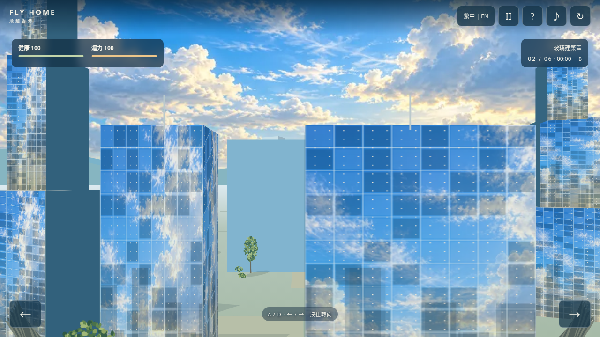

night
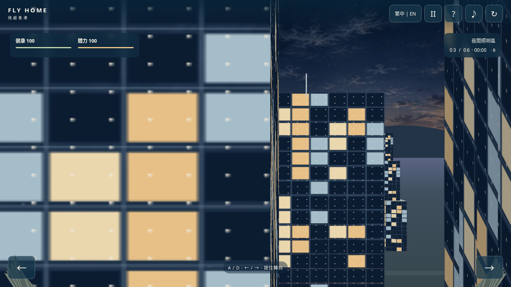

开始试玩 ↗ · 离线版 · 完整体力收支、测试与限制 · 原始测试结果
已完成本地 Chromium 验证；线上版本尚未验证。手机为视口与触屏模拟，未使用实体手机。结束过程为 4 秒，可跳过；减少效果为 0.8 秒静态提示。体力数值是游戏设计，不是科学测量。
| 项目 | 调整前 | 调整后 |
|---|---|---|
| 持续飞行 | 0 | −0.40/秒；典型 −68.56 |
| 分段扣减 | −32 | 0 |
| C 绕道 | −20 | −28 |
| 干扰 A/B/C | −10/−10/−10 | −14/−8/−3 |
| 停歇 B/C | 0 / +60（实际 +45） | +21 / +51 |
| 抵达奖励 | +10 | +8 |
| A/B/C 抵达剩余 | 68 / 68 / 93 | 25.44 / 52.44 / 59.44 |
三路线健康 100、无重试、无紧急恢复。自动转向控制器通过真实开口完成，非全部操作保证通关。


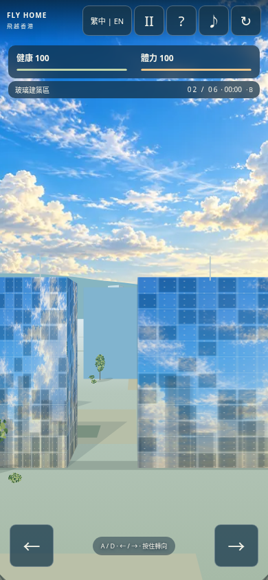

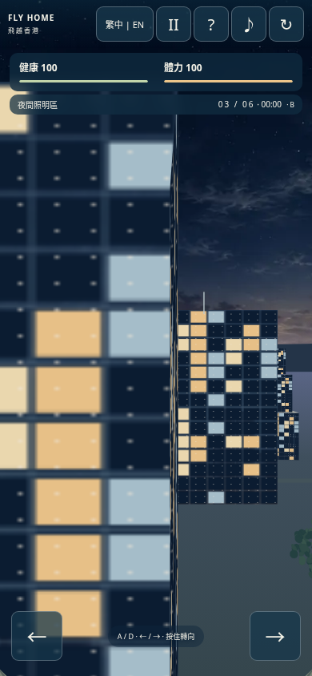
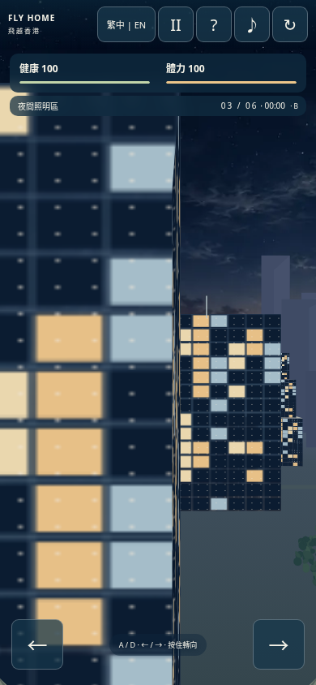
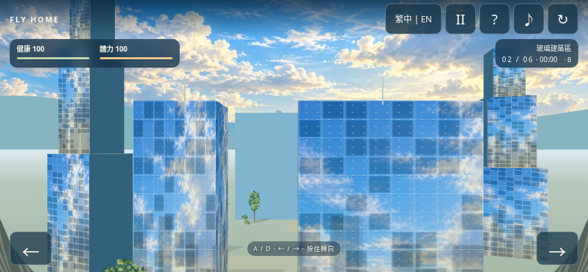
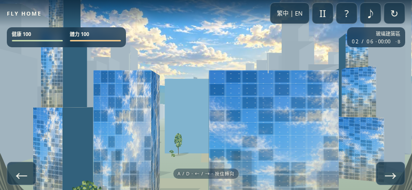
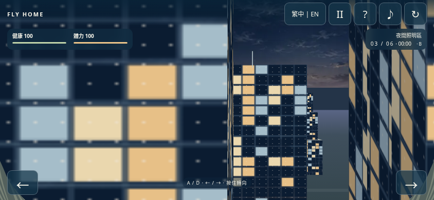
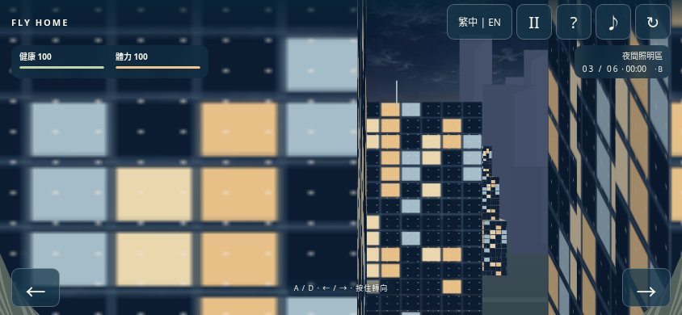
实际 Canvas 在 0、0.8、1.6、2.4、3.2 秒的画面。
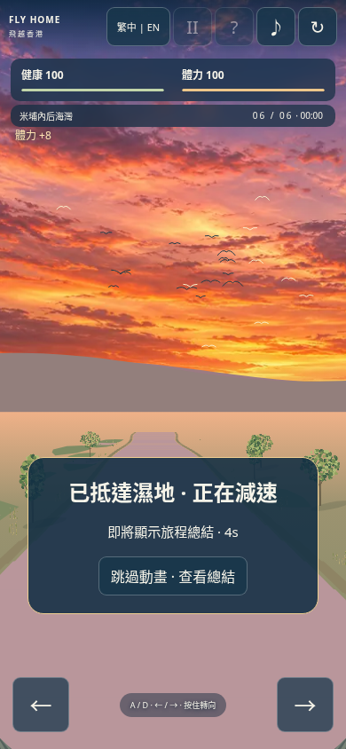
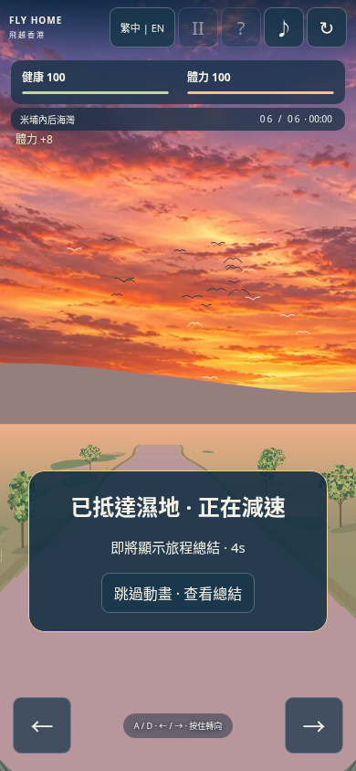
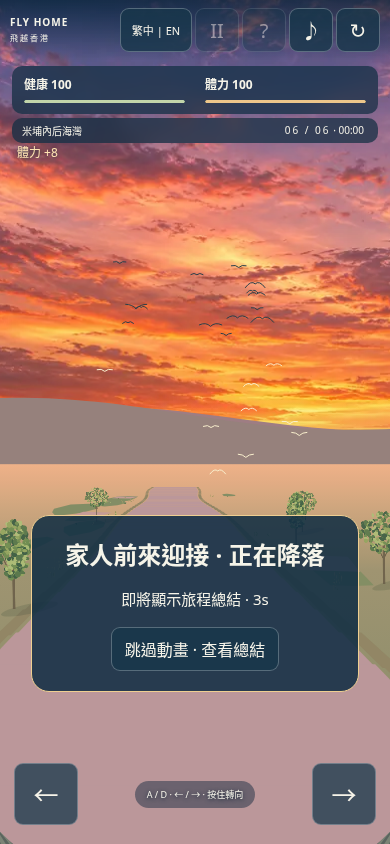
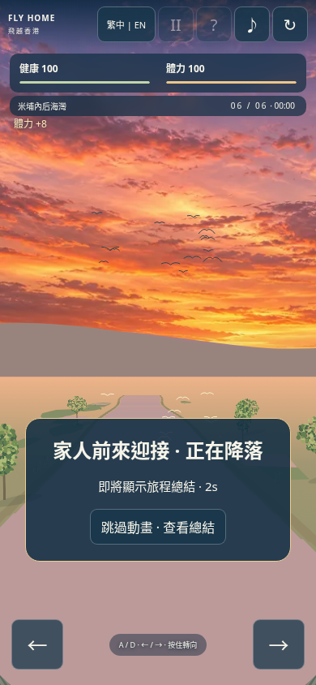
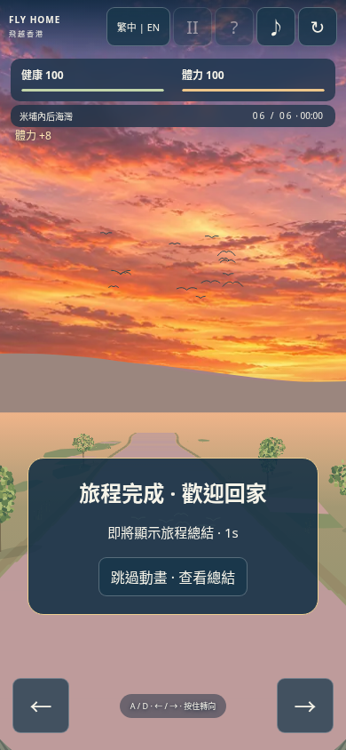
实际 Canvas 在 0、0.8、1.6、2.4、3.2 秒的画面。
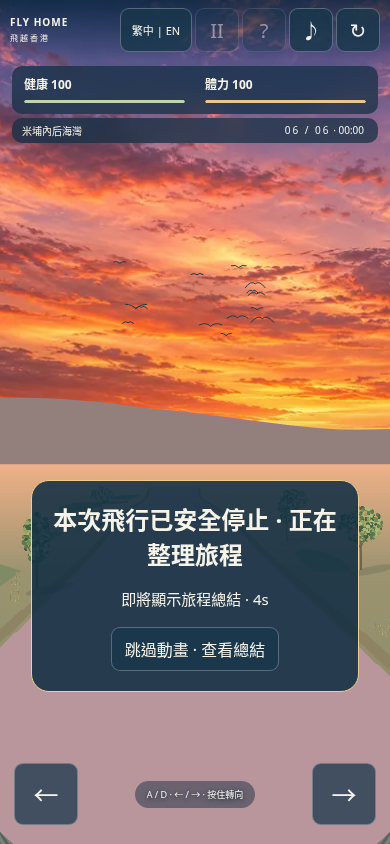
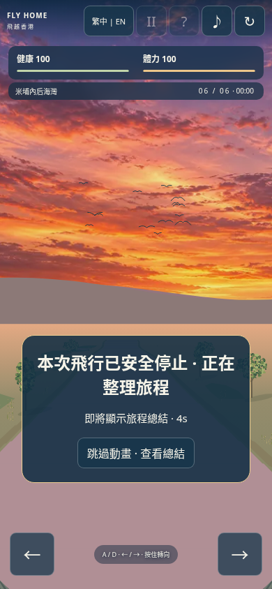
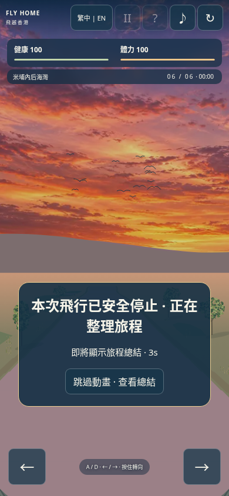
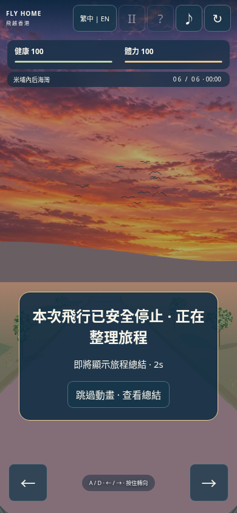
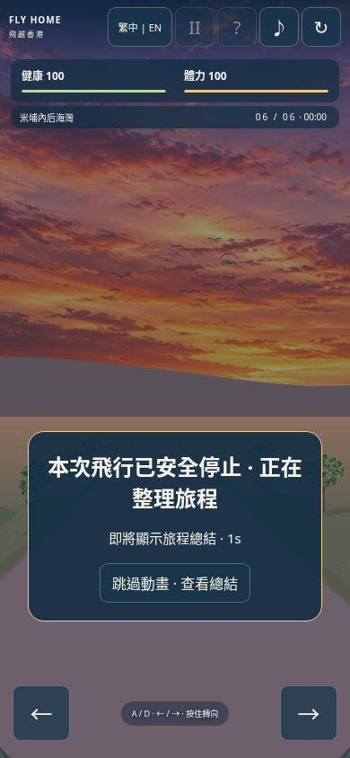
| desktop / day | 1.68 → 3.19 | 2.40 → 4.70 | 59.3 → 50.0 | | desktop / night | 2.52 → 2.96 | 3.60 → 4.10 | 54.5 → 48.0 | | portrait / day | 1.32 → 1.68 | 2.30 → 3.00 | 60.0 → 60.0 | | portrait / night | 1.27 → 1.60 | 1.80 → 2.60 | 60.0 → 60.0 | | landscape / day | 1.54 → 1.61 | 2.70 → 2.20 | 60.0 → 60.0 | | landscape / night | 1.62 → 1.67 | 2.40 → 2.10 | 60.0 → 60.0 |
单轮软件 Chromium；预热 20 帧，采样 80 帧。Canvas 调用耗时不等于整帧耗时，不代表实体设备性能。